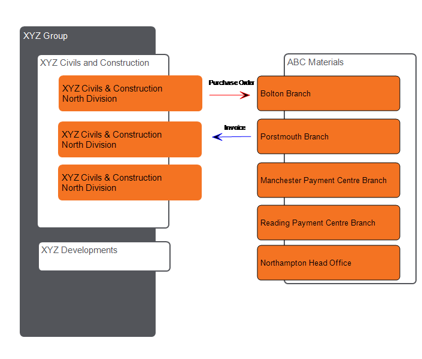

Internal and External Companies
There are two types of entity in that are sometimes confused: internal companies and external companies.
- Internal companies are the accounting and business entities of your organation. They are sometimes known as " " or "KCOs" (pronounced "kay-koe" and named after the database record that represents them). They are used to manage the legal, operating and financial structure of the business. Typically a legal entity which is also a significant operating business is set up as a separate . Financial ledgers, such as the General Ledger and , are managed separately by each .
- External companies are companies that you deal with outside your organation, such as , subcontractors, and customers (but also companies such as solicitors, financial companies and utility companies). These are sometimes known as CIW companies (CIW is short for the Company Information Workbench).
The ways in which these relate can be quite complex:
- If you are an organation with many that manage their own supply chains, how do you manage the same across the different ?
- If you are trading with a that has many branches or depots, and several different payment processing , how do you record these different entities and how do you trade with them?
For example: XYZ Contractor, North Divison may place an Order with ABC Materials Bolton branch, but the Purchase Invoice is issued by the ABC Materials Manchester payment . The XYZ Contractor has a Shared service that matches the invoice to the order, and pays the invoice out of the Civils & Construction company (which has a North and a South division).

In we have the following entities to manage the above:
ABC Materials
ABC Materials is an example of a CIW Company.
ABC Materials has many offices – Bolton Branch, Portsmouth Branch, Manchester Payment , Reading Payment , Northampton Head Office and potentially many others.
Each office has one or more addresses associated with it. Typically there will just be one address for each office, but the Bolton branch could have the Manchester Payment as a separate Payment address.
For more information, see Company Information Workbench.
XYZ Group
An internal is created for XYZ Civils & Construction, and for XYZ Developments. These each have their own financial ledgers, including . can be configured to set up an ABC Materials account ABC001 in both , and these two PL accounts can both be linked to the ABC Materials CIW offices for Manchester and Reading. For more information, see Ledger Accounts and Companies.
can then create different views of (a view controls which are displayed in the browse screen). To manage the example above, two or three separate views could be created: A global database view and a view are mandatory. An additional Divisional View is optional. Users are set up to have a default "User View". If XYZ Developments does not use ABC Materials, then ABC Materials would be excluded from the company View for XYZ Developments; the Procurement Manager for XYZ Developments would not see ABC Materials in his default View. If he amended his view to Global, he would see ABC Materials. He could then add ABC Materials to his Company view if XYZ Developments planned to purchase materials from ABC Materials. For more information. see User View.
In , a Status Code is used to say whether the is "approved". There can be different status codes; for example: Unapproved, Approved, Preferred, Partner. Different statuses can be applied to each “View”. So the North Division could say that ABC Materials is "Preferred" and the South Division could set the status as merely "Approved". The Status at comapny level (XYZ Civils & Construction) would be shown as "Approved", and the Group status would also be "Approved", because the lowest status level is propagated by up the hierarchy. For more information, see Approval Levels (Status Codes).